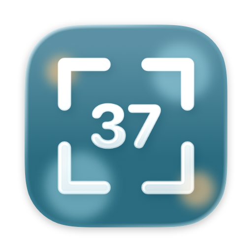

Focus Tool 37
Move focus between windows with the keyboard, and bring the mouse cursor along.
Or with Homebrew:
brew install --cask netzgut/tap/focus-tool-37
What it does
Press ⌥⌘L and focus jumps to the nearest window to the right, across every window on the current Space and on every display. The mouse pointer lands in the middle of that window, so switching to the mouse doesn't mean following the focus by hand.
Focus Tool 37 is a menu-bar agent: no Dock icon and no app switcher entry, except while its settings window is open.
Shortcuts
| Action | Vim keys | Arrow keys |
|---|---|---|
| Focus left / down / up / right | ⌥⌘ H J K L | ⌥⌘ ← ↓ ↑ → |
| Same app only (off by default) | ⌥⌘⇧ H J K L | ⌥⌘⇧ ← ↓ ↑ → |
Both key-presets are on by default and work at the same time. Custom shortcuts can be added in the settings, which warn before saving a combo that collides with a system shortcut.
Details
- Physical key positions Shortcuts are bound to where a key sits, not the character on it, so ⌥⌘HJKL stays under the same fingers on any layout.
- Focus outline A coloured border briefly traces the newly focused window, following its corner radius where it can.
- Every display Moving left or right simply continues onto the next monitor when the current one runs out. A dead end does nothing.
- VoiceOver Every setting is labelled, and a focus move is announced with the app and window title.
How the target window is chosen
The target is found by plain geometry over the visible windows, in three passes:
- Overlapping windows whose centre lies beyond the current window's centre in the direction of travel. The nearest centre wins, so repeated presses walk through a stack window by window.
- The edge band: windows beyond the current window's edge that overlap it sideways. The smallest gap wins.
- A ±45° cone as a fallback, when nothing lies squarely in that direction.
Windows hidden behind others are valid targets, so directional navigation doubles as a window switcher.
Requirements
macOS 14 or later, and the Accessibility permission
English and German localizations are included.
AI Disclosure
This project was built with the help of Claude.
I've developed quite a few differnt iOS apps, starting in Swift-less times, but I had no prior experience with developing AppKit apps. That's why AI can bridge the gap to get the project up and running and help with implementing the details, creating a learning experience. It's a tool, and should be used as such, not as a replacement for the full process.